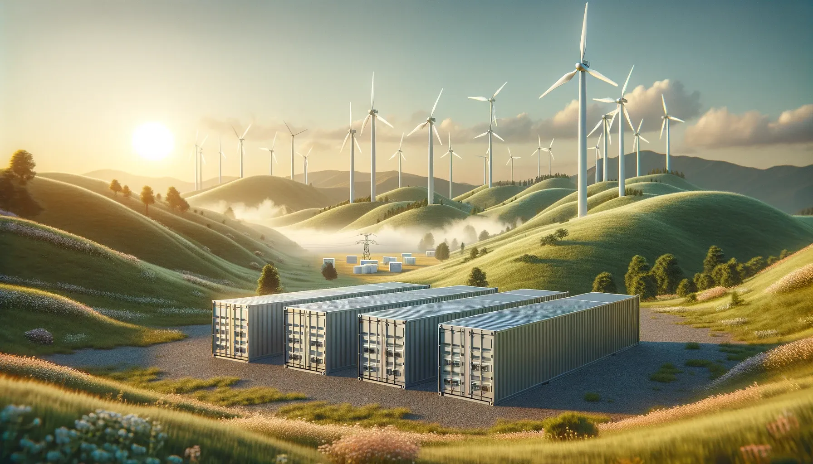
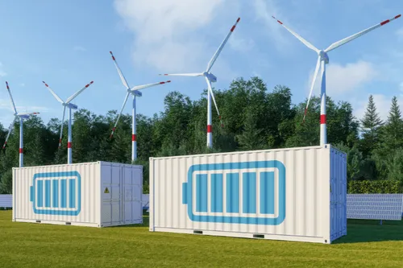
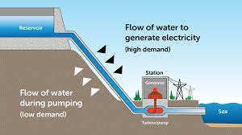
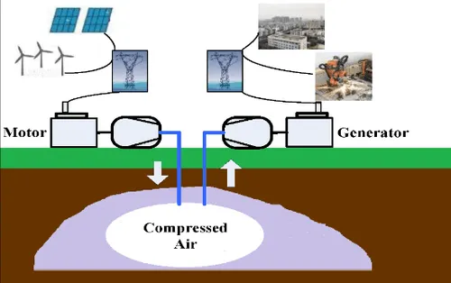
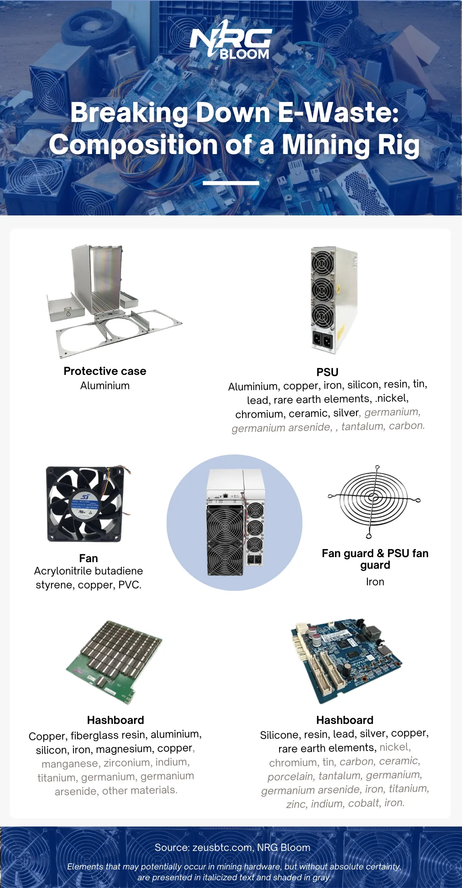

Energy Storage Solutions for Stranded Energy

As the world continues to focus on renewable energy sources, the need for energy storage solutions has become increasingly apparent. One area where energy storage can have a significant impact is in addressing stranded energy.
Stranded energy refers to unused power that is generated in areas where there is limited access to transmission lines or grid infrastructure to transport the power to areas of high demand. Energy storage solutions can help resolve this issue by storing the unused power and making it available when needed.
By utilizing energy storage for stranded energy, we can maximize efficiency and sustainability in the energy sector while also reducing waste. In this article, we will explore the concept of energy storage for stranded energy in more detail, discussing its importance, challenges, and potential solutions.
Table of Contents
- Understanding Stranded Energy
- Challenges of Stranded Energy
- The Importance of Energy Storage
- Different Types of Energy Storage
- Bitcoin Mining as a Solution
- Future Outlook: Advancements in Energy Storage
Understanding Stranded Energy
Stranded energy refers to the power generated that is unable to be utilized due to its location or the lack of infrastructure to transmit it. It can be caused by various factors such as surpluses of intermittent renewable energy sources, supply chain inefficiencies and grid constraints, and represents a significant untapped potential in the energy sector.
Unused power is a common occurrence in the energy sector as traditional energy systems don't typically align with the industry's demand profile. Renewable energy resources usually peak during off-peak demand periods when needed the least, meanwhile, peak hours tend to coincide with times of low renewable generation. By unlocking stranded energy, industries can utilize wasted capacity, optimize energy use and reduce carbon footprint.
Challenges of Stranded Energy
While utilizing stranded energy through renewable energy storage solutions can offer numerous benefits, there are also challenges associated with the process. One significant challenge is grid limitations. As renewable energy sources become more widely adopted, the existing power grid infrastructure may struggle to handle the influx of energy produced by these sources. Upgrading and expanding the grid can be costly and time-consuming, which can hinder the integration of stranded energy.
Another challenge is the intermittency of renewable energy sources. Solar and wind power, two of the most popular types of renewable energy, are dependent on weather conditions and, therefore, are not consistent sources of energy. This inconsistency can create hurdles, particularly when it comes to planning and managing the energy supply.
Despite these challenges, energy storage solutions offer a way to effectively harness stranded energy and maximize its potential, making it a compelling option for the energy sector.
The Importance of Energy Storage
Energy storage plays a crucial role in maximizing efficiency and sustainability in the energy sector. By storing excess energy that would otherwise go to waste, energy storage systems can provide a reliable and cost-effective source of energy during times of high demand, reducing the need for expensive and environmentally harmful fossil fuels.
In addition to its environmental benefits, energy storage can also have a significant economic impact. According to a report by the National Renewable Energy Laboratory, increasing the deployment of energy storage systems could save the US electricity sector up to $4 billion annually by 2030.
Energy storage systems can also improve the stability and reliability of the grid, reducing the likelihood of blackouts and brownouts. By storing excess energy generated by intermittent renewable energy sources such as wind and solar, energy storage systems can ensure a consistent supply of power to homes, businesses, and industries.
Overall, the benefits of energy storage, from increased efficiency to reduced costs and environmental impact, make it a critical component of the future of the energy sector.
Different Types of Energy Storage
There are several energy storage technologies available, each with its own strengths and weaknesses. Among these, battery storage and pumped hydro storage are the most widely used and popular options.
Battery Energy Storage Solutions

Battery storage involves converting electrical energy into chemical energy for storage, and then back into electrical energy when needed. Common types of batteries used for energy storage include lithium-ion, lead-acid, sodium-sulfur, and flow batteries. During charging, electricity from the grid or renewable sources is used to induce chemical reactions within the battery, storing energy. During discharge, these chemical reactions reverse, releasing the stored energy as electricity.
Advantages
Battery storage is scalable and flexible, making it suitable for a wide range of applications, from small residential setups to large grid-scale systems. It offers rapid response times, which is crucial for applications like frequency regulation and peak shaving. Additionally, batteries can be installed in diverse locations, including remote or off-grid areas.
Limitations
The primary challenges of battery storage include the high initial investment and ongoing maintenance costs. Batteries also have a limited lifespan, leading to a need for replacement over time. The energy density of batteries, i.e., the amount of energy they can store per unit volume or weight, is a limitation for some types, which can be a concern in space-constrained environments. Additionally, the production and disposal of batteries, especially those containing rare or toxic materials, raise environmental and resource concerns.
Pumped Hydro Storage Solution

Pumped hydro storage is a type of hydroelectric power storage. It involves two water reservoirs at different elevations. During periods of low energy demand and excess electricity generation, water is pumped from the lower to the upper reservoir. When electricity is needed, water is released back to the lower reservoir through turbines, generating electricity.
Advantages
Pumped hydro storage is capable of storing large amounts of energy, making it suitable for balancing energy supply and demand over extended periods. It has a long lifespan, providing a durable and reliable storage solution. With round-trip efficiencies typically between 70% to 85%, pumped hydro is one of the most efficient forms of energy storage.
Limitations
The effectiveness of pumped hydro storage is heavily dependent on geographic location, requiring specific topographical conditions that are not universally available. The construction and operation of pumped hydro storage can have significant environmental impacts, including effects on local wildlife and water quality. The high initial costs for construction, along with long development times, are substantial economic barriers. Additionally, there are energy losses associated with pumped hydro storage, primarily due to inefficiencies in the pump and turbine systems during the process of storing and releasing water.
Flywheel Energy Storage Solution
Flywheel energy storage systems use a rotating mechanical device, known as a flywheel, to store energy. Energy is stored in the form of rotational kinetic energy of the flywheel. When energy input is available, an electric motor accelerates the flywheel, storing energy as rotational speed. When energy is needed, this process is reversed; the rotating flywheel drives a generator, converting the kinetic energy back into electricity.
Advantages
Flywheels provide high power output for short durations, making them ideal for applications like power quality management and frequency regulation in power grids. They have a long lifespan, high cycle efficiency, and can deliver energy quickly. Additionally, they are environmentally friendly with no direct emissions.
Limitations
The amount of energy they can store is relatively limited compared to other storage technologies. They are also sensitive to friction and air resistance losses, and maintaining the vacuum seals and bearings can be challenging.
Compressed Air Energy Storage Solution

This method stores energy by using surplus electricity to compress air, which is then stored in underground caverns, tanks, or other containers. When electricity is needed, the compressed air is released, heated, and expanded in an expansion turbine that drives a generator to produce electricity.
Advantages
Compressed air energy storage systems can store large amounts of energy, which is useful for balancing energy supply and demand over long periods. They are suitable for grid-scale storage and can provide peak load energy.
Limitations
Compressed air energy storage systems can store large amounts of energy, which is useful for balancing energy supply and demand over long periods. They are suitable for grid-scale storage and can provide peak load energy.
Thermal Energy Storage Solution
Thermal energy storage involves storing energy in a thermal reservoir. It can be done by heating or cooling a storage medium. During periods of low energy demand, excess energy is used to heat or cool the medium. When energy is needed, the stored thermal energy is converted back into electricity or used directly for heating or cooling purposes.
Advantages
This method is particularly useful in managing the supply and demand for heating and cooling. It's essential in solar thermal energy plants, where heat can be stored during the day and converted to electricity at night. It’s also cost-effective, has a large storage capacity, and is environmentally friendly.
Limitations
The efficiency can be affected by heat losses over time. Also, the effectiveness of thermal storage depends on the insulation quality of the storage system.
Hydrogen Storage
Hydrogen storage involves converting electricity into hydrogen via electrolysis (splitting water into hydrogen and oxygen using electricity). The hydrogen can then be stored and used later as a fuel or reconverted into electricity through a fuel cell.
Advantages
Hydrogen has a high energy density and can be stored for long periods, making it suitable for seasonal storage. It's versatile and can be used in various applications, including transportation, power generation, and as an industrial feedstock. Hydrogen is also environmentally friendly when produced from renewable sources.
Limitations
The overall efficiency of hydrogen storage (from electricity to hydrogen and back to electricity) is relatively low due to losses in electrolysis and fuel cells. The storage and transport of hydrogen require high-pressure tanks or cryogenic temperatures, adding to the complexity and cost.
Bitcoin Mining as a Solution

Future Outlook: Advancements in Energy Storage
The field of energy storage is constantly evolving, with technological innovations paving the way for new and improved solutions for utilizing stranded energy. One major area of advancement is in battery storage, with researchers and manufacturers exploring ways to enhance the efficiency, durability, and affordability of these systems.
Another exciting development is the rise of AI-powered energy storage management systems, which are capable of optimizing energy usage by analyzing data in real-time. This technology can help reduce waste and increase efficiency, making energy storage a more cost-effective solution for both individual consumers and large-scale operations.
The future of energy storage is also likely to see increased utilization of renewable energy sources, such as wind and solar, which can be harnessed through the use of new technologies like flow batteries and thermal energy storage systems. These advancements could help mitigate some of the challenges associated with grid limitations and the intermittency of renewable sources.
As these advancements continue to emerge, we can expect energy storage to play an increasingly vital role in our transition towards a more sustainable energy future.
Conclusion
In conclusion, the utilization of energy storage solutions for stranded energy has the potential to revolutionize the energy sector by maximizing efficiency and sustainability. By understanding and harnessing stranded energy, we can effectively address the challenges of grid limitations and intermittent renewables. Energy storage technologies such as battery storage and pumped hydro storage offer viable options to effectively store and utilize stranded energy.
It is important to remember that the economic and environmental benefits of utilizing energy storage for stranded energy are immense. The positive impact on the economy and the environment is undeniable, making it a sustainable and responsible solution for the energy sector.
To sum up, renewable energy storage solutions for stranded energy hold the key to unlocking untapped potential in the energy sector and achieving a more efficient and sustainable future. It is time we start prioritizing the adoption of such solutions.